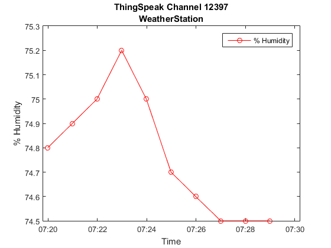
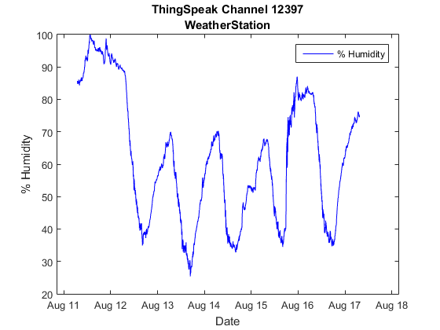
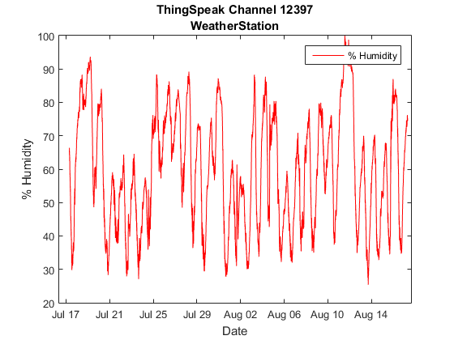

Retrieve a Range of Data Using thingSpeakRead
This example shows how to retrieve a range of data for a channel using available name-value pairs.
Contents
Inspect fields present in the channel
Display channel information to inspect field descriptions.
[~,~,channelInfo] = thingSpeakRead(12397); channelInfo
channelInfo =
ChannelID: 12397
Name: 'WeatherStation'
Description: 'MathWorks Weather Station, West Garage, Natick, MA...'
Latitude: 42.2997
Longitude: -71.3505
Altitude: 60
Created: [1x1 datetime]
Updated: [1x1 datetime]
LastEntryID: 625927
FieldDescriptions: {1x8 cell}
FieldIDs: [1 2 3 4 5 6 7 8]
URL: 'https://api.thingspeak.com/channels/12397/feed.json?'
Observe there are eight fields, but the descriptions are not visible. To see the descriptions, display the FieldDescriptions.
channelInfo.FieldDescriptions'
ans =
'Wind Direction (North = 0 degrees)'
'Wind Speed (mph)'
'% Humidity'
'Temperature (F)'
'Rain (Inches/minute)'
'Pressure ("Hg)'
'Power Level (V)'
'Light Intensity'
The descriptions correspond to the IDs shown in the FieldIDs.
channelInfo.FieldIDs
ans =
1 2 3 4 5 6 7 8
Looking at the FieldDescriptions we can see that Humidity is at index 3.
channelInfo.FieldDescriptions{3}
ans = % Humidity
Index 3 of the FieldIDs tells us that the ID is also equal to 3.
channelInfo.FieldIDs(3)
ans =
3
In this case, the ID was the same as the index, but that may not always be the case.
Download the last 10 minutes of Field 3.
[data,timestamps,channelInfo] = thingSpeakRead(12397,'Fields',3,... 'numMinutes',10);
Check the timestamps to verify the data.
timestamps(1) timestamps(end)
ans = 17-Aug-2015 07:19:59 ans = 17-Aug-2015 07:29:00
Find the mean between data points.
mean(diff(timestamps))
ans = 00:01:00
Time between data points is 1 minute and for 10 minutes of data requested, you should see 10 data points returned.
length(timestamps)
ans =
10
Plot the data. There might be fewer than 10 points if the sensor missed a few measurements.
figure plot(timestamps,data,'ro-') title(sprintf('ThingSpeak Channel %d\n%s',channelInfo.ChannelID,channelInfo.Name)) xlabel('Time') ylabel(channelInfo.FieldDescriptions{3}) legend(channelInfo.FieldDescriptions{3})
Download the last month of recorded data
Finally, let's download all of the Humidity data. ThingSpeak will always send the most recent data of the date range that you specify. This means that if you specify a date range that has a number of total points within the maximum number of points that it can send, that you will receive all of the points. However, if you specify too wide of range, you will only receive 8000 points from the end of your range backwards towards the start time. Let us try this.
Download data for the last 30 days
[data,timestamps] = thingSpeakRead(12397,'Fields',3,'NumDays',30);
The warning received indicates that the full number of days was not read. Examine the length of the data to see if there is a mismatch with the ThingSpeak data limits.
length(data)
ans =
8000
ThingSpeak.com limits the data at 8000 points for a single query. Plot the data returned so far.
figure plot(timestamps,data,'b-') title(sprintf('ThingSpeak Channel %d\n%s',channelInfo.ChannelID,channelInfo.Name)) xlabel('Date') ylabel(channelInfo.FieldDescriptions{3}) legend(channelInfo.FieldDescriptions{3})
Therefore, if we need to request more data than allowed in a single call, we can use a for loop to get data for multiple days.
startDate = datetime('now', 'TimeZone', 'local') - calmonths(1); endDate = datetime('now', 'TimeZone', 'local'); dateVector = startDate:caldays(1):endDate; data = []; timestamps = []; for nDays = 1:numel(dateVector)-1 [dataPrev,timestampsPrev] = thingSpeakRead(12397,'Field',3,... 'DateRange', [dateVector(0+nDays), dateVector(1+nDays)]); data = [data; dataPrev]; timestamps = [timestamps; timestampsPrev]; end
Plot the full data.
figure plot(timestamps,data,'r-') title(sprintf('ThingSpeak Channel %d\n%s',channelInfo.ChannelID,channelInfo.Name)) xlabel('Date') ylabel(channelInfo.FieldDescriptions{3}) legend(channelInfo.FieldDescriptions{3})